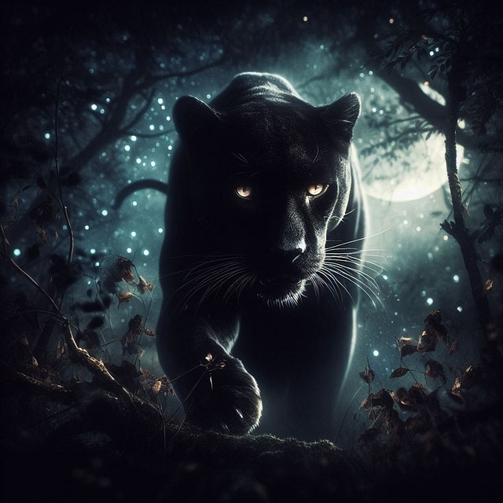
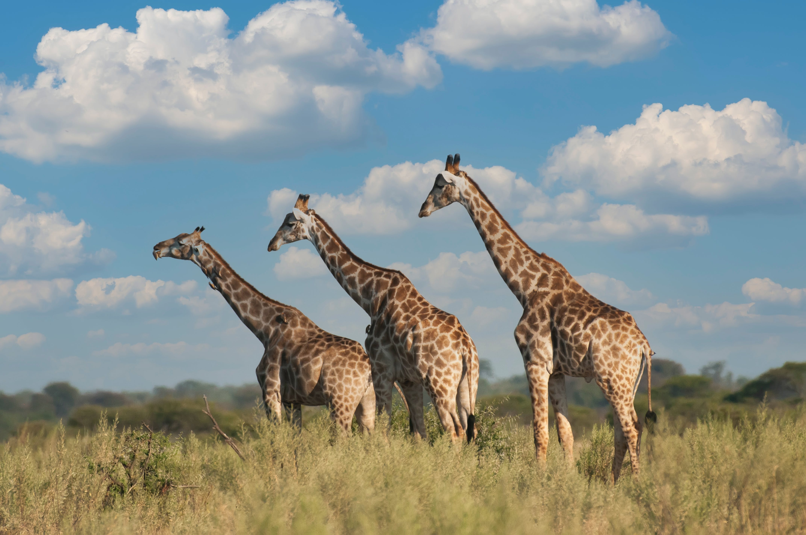
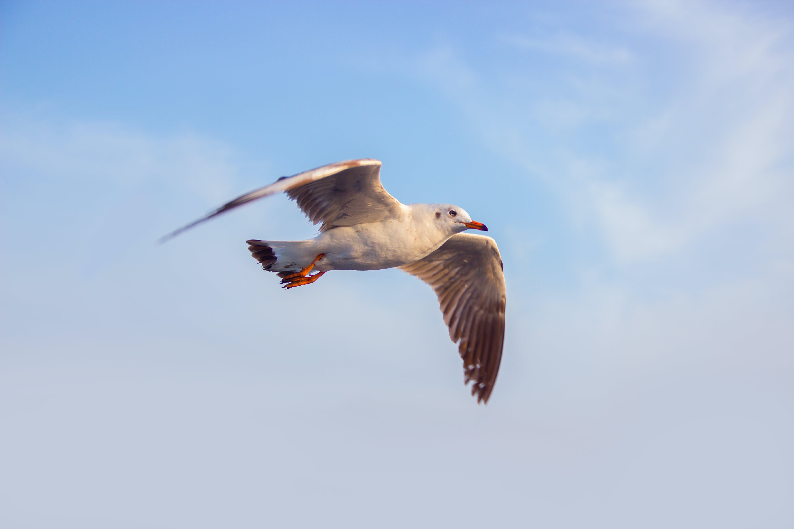

Los Animales
La fascinante vida animal y su relación con el hombre.
Como investigador naturalista, puedo asegurar que la vida animal en la Tierra es compleja, diversa y fascinante. Los animales desempeñan un papel crucial en los ecosistemas, desde la polinización de las plantas hasta el control de las poblaciones de plagas. Su relación con el hombre es compleja y ha evolucionado a lo largo de la historia.
Sin embargo, la actividad humana está teniendo un impacto negativo en la vida animal. La destrucción del hábitat, la caza furtiva y el cambio climático están amenazando a muchas especies. Es por eso que es necesario difundir y concientizar sobre el cuidado de los animales.
Educar a las personas sobre la importancia de la biodiversidad y la necesidad de proteger a los animales es vital para el futuro de nuestro planeta. Todos podemos contribuir a este esfuerzo, desde pequeños cambios en nuestro estilo de vida hasta apoyar a las organizaciones que trabajan por la conservación de la naturaleza.
Nuestra convocatoria: Solo si trabajamos juntos podemos asegurar un futuro sostenible para la vida animal en la Tierra.


- 
- 
- 


Respeto por la vida
Lo ironico es que el hombre este dispuesto a descubrir vida en el universo y cuanto daria por ese descubrimiento,
asi fuese la más rudimentaria o elemental celula viviente. Lo que no es condenable, por el contrario es una empresa loable.
Pero lo que si es condenable: es que en la tierra haya una gran parte de la sociedad que no respeta la vida de los otros seres diferentes al hombre.
No se pretende el moralismo, solo se pretende la senstez.